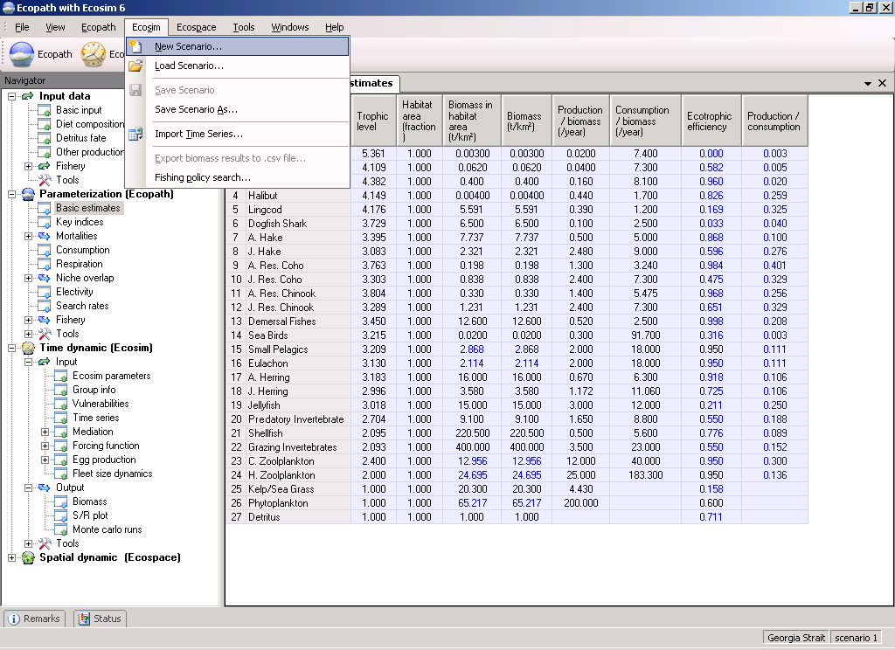
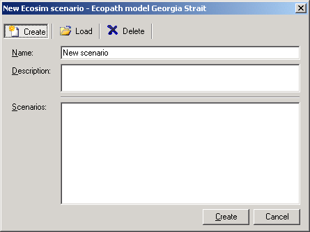
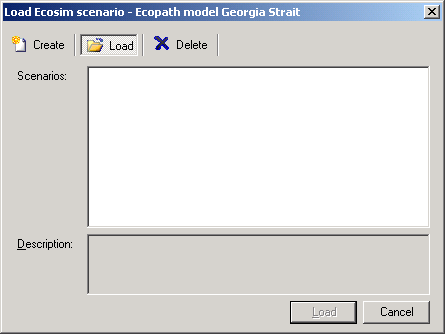

When working in Ecosim or Ecospace you work within a ‘scenario’. A given Ecopath model can have any number of Ecosim and Ecospace scenarios attached, and they all inherit their basic parameters (such as number of groups, group names, diets and other parameters) from the parent Ecopath model. If you change a group name or delete a group in Ecopath the changes will be carried over to existing (and new) Ecosim and Ecospace scenarios. A scenario keeps track of all the information that is needed to store and later duplicate a simulation.
Important note: Before using Ecosim you must have a balanced Ecopath model. Once you have finished balancing your Ecopath model you can begin using Ecosim. Note that once you start using Ecosim, especially when you start fitting to time series data, you will most likely encounter unexpected problems that require you to iteratively make adjustments to your Ecopath model (for example, groups becoming extinct because predation or fishing pressure is too high). Iterating between Ecopath and Ecosim in this way can be time-consuming but is very informative. Indeed, running Ecosim is an important test of the viability of a newly-balanced model and can raise interesting research questions.
When you are ready to start using Ecosim, you must first create a new Ecosim scenario. You can do this by selecting New Scenario on the Ecosim menu (Figure 8.1). This will open the New Ecosim scenario dialogue box (Figure 8.2a) where you can re-name your new scenario and add a description. Alternatively, you can click once on the Ecosim shortcut button [], which will open the Load Ecosim scenario dialogue box (Figure 8.2 b). Select the Create option to change it into the New Ecosim scenario dialogue box.

Figure 8.1. The Ecosim menu. The Ecosim shortcut button can also be seen immediately to the left of the open menu.


Figure 8.2aFigure 8.2b Have some scenarios here
The procedure for opening an existing Ecosim scenario is similar to that for creating a new scenario. Open the Load Ecosim scenario dialogue box by selecting Load scenario from the Ecosim menu. Existing scenarios will be listed in the Scenarios window (Figure 8.2b). Select the scenario you wish to load and click the Load button at the bottom of the dialogue box.
Alternatively, you can open a scenario directly using the Ecosim shortcut button []. Click on the down arrow on the right of the bottom to open a list of available Scenarios and click on the name of the desired scenario. Note that the model must be closed and re-opened before new scenarios are added to menu under the Ecopath shortcut button. New scenarios can always be accessed from the Load Ecosim scenario dialogue box, regardless of when they were created.
Deleting an Ecosim scenario is easily done using the Load Ecosim scenario dialogue box. Simply select the scenario you wish to delete in the Scenarios window and click the Delete button at the top of the dialogue box. The Load button at the bottom of the box will then change to a Delete button, which must be clicked. You will be given the option to proceed or cancel. Clicking Yes implements deletion. Clicking No cancels deletion and you can then exit the dialogue box by clicking the Cancel button.
WARNING: Scenario deletion cannot be undone.
You can save a scenario at any time by selecting Save scenario on the Ecosim menu.
The Ecosim menu also has a Save As option, allowing you to save your scenario under a new name. This is an important feature that allows you to preserve properties of an Ecosim scenario that you are happy with (e.g., Vulnerabilities, Group info), while exploring the impact of other factors in different scenarios. It is also a useful way to create a backup of a successful scenario before trying out new parameter values.
There are two main types of data that you can read in to Ecosim: historical comparison data and time forcing data. Use Import time series to open a dialogue box that enables you to import a data file containing these types of data. For further instructions on using this dialogue box, see Import time series.
For important introductory information about fitting Ecosim models to time series data, see Time series fitting in Ecosim and Hints for fitting models to time series reference data.
Exports the raw resultsof the last Ecosim run to a csv file. See the Run Ecosim form for more details about these results.
Opens the Fishing policy search form.